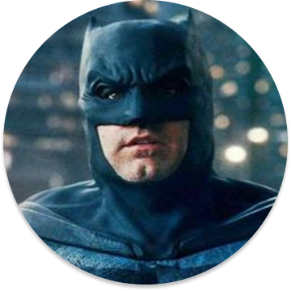
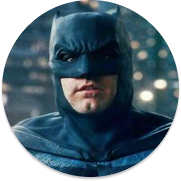
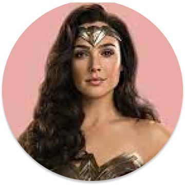
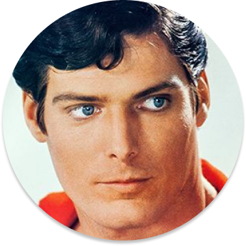
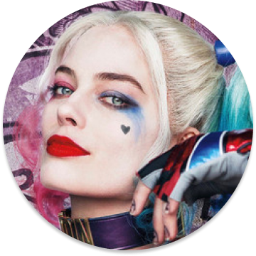

BATMAN
Bruce Wayne es el único personaje que se identifica como Batman y aparece en Batman, Detective Comics, Batman y Robin, y Batman: The Dark Knight. Dick Grayson vuelve al manto de Nightwing

MUJER MARAVILLA
Es una superheroína creada por William Moulton Marston para la editorial DC Comics. Es una princesa guerrera de las Amazonas, pueblo ficticio basado en el de las amazonas de la mitología griega. En su tierra natal es conocida como la princesa Diana de Temiscira pero fuera de esta utiliza la identidad secreta de Diana Prince.

SUPERMAN
Es un superhéroe que apareció por primera vez en los cómics estadounidenses publicados por DC Comics. El personaje fue creado por el escritor estadounidense Jerry Siegel y el artista canadiense Joe Shuster en 1933 cuando ambos se encontraban viviendo en Cleveland, Ohio.

Harley Quinn
Harley Quinn es un personaje ficticio creado por los estadounidenses Paul Dini y Bruce Timm para la editorial DC Comics. Quinn hizo su debut en el vigésimo-segundo episodio de Batman: la serie animada, «El favor del Joker», en septiembre de 1992 y se convirtió en una villana recurrente en la serie